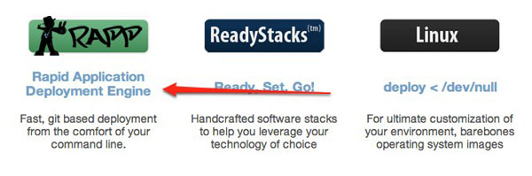
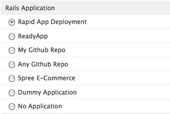
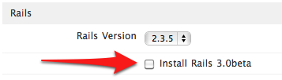

Rapid Application Deployment Engine
Preparation
In order to use the Rapid App Deployment, you have to redeploy your Webby with this stack, but this just has to be done once. After that, you’ll be able to add new apps on the fly, without loosing what’s already configured on your Webby.
Here’s a step-by-step guide of the options you need to choose:
Choose the Rails ReadyStack

Choose WebServer and Proxy and Database Server
Right now both Apache2 and nginx with Passenger are supported. Both databases – MySQL and PostgreSQL – are also supported.

Choose Rapid App Deployment option

Configuration
There are a couple of configuration settings you can choose before deploying:

App Base Path
That’s the directory where all your apps will be deployed.
Let’s say you deploy 3 applications, called blog, todo and shopping_list. Here’s how your Base Path folder structure will look like, assuming you kept the default value of /var/rails:
var
`- rails
|- blog
|- todo
`- shopping_list
Password for deploy user
This is the password you’ll have to type when deploying.
An user called git is always created when installing the Rapid App stack. This option let’s you pick a password for this user.
Rack frameworks
Pick what Rack Frameworks RubyGems you want to install.
If you’re planning on deploying some Sinatra, Ramaze, Rango or Merb apps, it may be a good idea to bootstrap your Webby with the corresponding gems. This way you avoid having to log into your Webby to install them. Choose as many as you want.
Rails 3.0 beta
Rails 3.0 beta was released February 4, and we’re already supporting deployment of apps built using this framework. Apps using this framework can be deployed in parallel to Rails 2.3.x and PHP apps. In order to enable this option, just check the checkbox below the Rails version dropdown:
